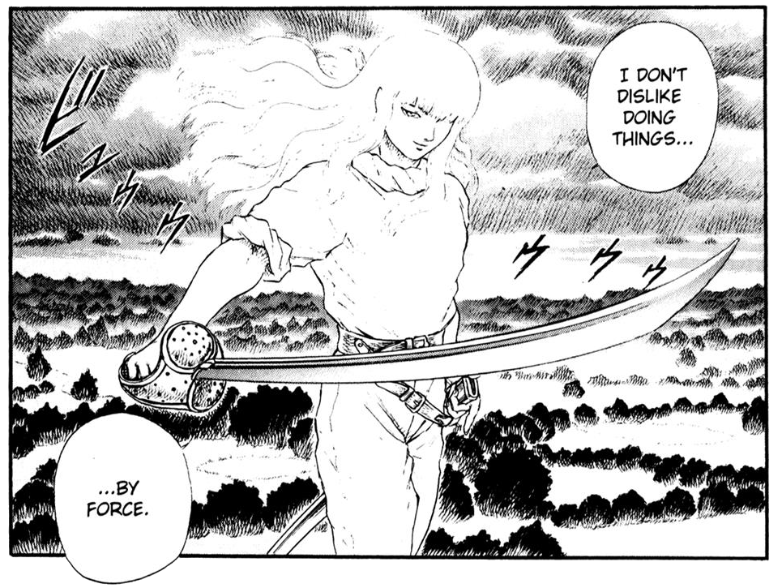
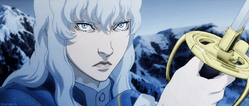
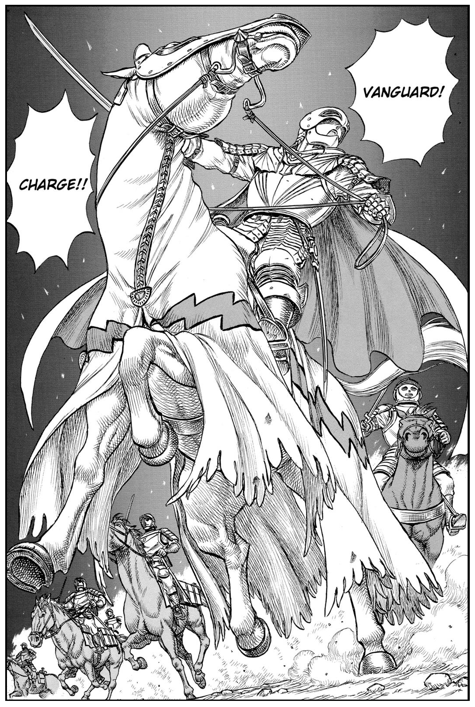

Abilities
Griffith is a commoner born into extreme poverty, who wants to ascend to life in high society and show the world that there is no difference between people on a birth level. He is the founder and leader of a mercenary group called "The Band of the Hawk".
After reincarnating, Griffith becomes Femto, the Wings of Darkness, and even after having most of his body nearly destroyed by the king's man, he's given with the ability to transmute into human form at will, acquiring an even more angelic and dazzling appearance.
Griffith's true form after the Eclipse event. Femto appears with exposed scaly muscles, wings in the shape of a cloak on his back, with his torture mask (formerly the iconic hawk-tipped helmet) fused to his head, and his color scheme changes from a light one to an absolute dark-wicked one (dark red in the anime).
Swordsmanship
 Griffith has always been an expert in the field of swordsmanship. With his precise piercing, he has swiftly dispatched enemies with one stab from his sword, capable of easily puncturing vitals if he so chooses. To combat denser, larger swords, he uses a skillful parrying technique, which involves using the opponent's sword weight against them, deflecting the larger blade down the side of his narrow sabre to create openings for offensive strikes. Griffith's cutting power is also considerable; he is able to completely sever Zodd's arm in a pincer movement alongside Guts, making him the second man in 300 years to wound the apostle.
Charisma
... Those who've been completely charmed by Griffith... those who figure as long as they stick with Griffith... they'll get to see great things. Anyway, all of us are here because of his charisma.
– Judeau
Even prior to his rebirth, Griffith is a magnetic figure who easily reels in admiration and devotion. His vaunted physical appearance in conjunction with his allure and persuasiveness make his presence undeniable and his ambitious dream ever so captivating. The range of his charm is only enhanced by his legendary successes, with people of all walks of life admiring his high climb from nothing.
Among even the Midland nobility, Griffith operates as efficiently as he does in battle, his illustriousness winning over the affection of nobles and commoners alike. Griffith's reincarnation brings about the tenfold increase in his already staggering charisma. With his return to the physical realm, the idolization he once garnered warps into exaltation, his presence now rightly described as inhuman by affected devotees.
Inducing submission into others has become an effortless task for him; even highly revered individuals collapse to their knees upon their first encounter with him. Most telling of his newfound influence is the alliance he has formed between demonkind and humanity, leading both the sinful black and blind white sheep, in accordance with the prophecy of the Holy See's scriptures.
Divinity
After his transcendence into Femto, Griffith no longer exists within the reasons of the Physical World, and as such, is invulnerable to mortal opposition – an existence no single man alone can rival. His absolution is akin to that of a story's author; those partaking in his fable have no chance of ever challenging him. Fate and fortune are therefore on his side, which alongside his now overwhelming charisma and enormous od, make his dominance in the physical realm absolute.
More glaringly astral is his telekinetic ability to manipulate gravity and space. He has manipulated repulsive force to repel physical attacks, as well as created gravity wells to catch enemies with an invisible attractive force capable of crushing the afflicted into oblivion. Most notable is his ability to warp and distort space, which he has used to easily grab a space-cleaving tear from the Beherit Sword and redirect it entirely.
Additionally, Griffith has displayed the ability to commune with the souls of the dead, and is able to manifest their lost consciousnesses to provide them one last opportunity to bid farewell to the world.